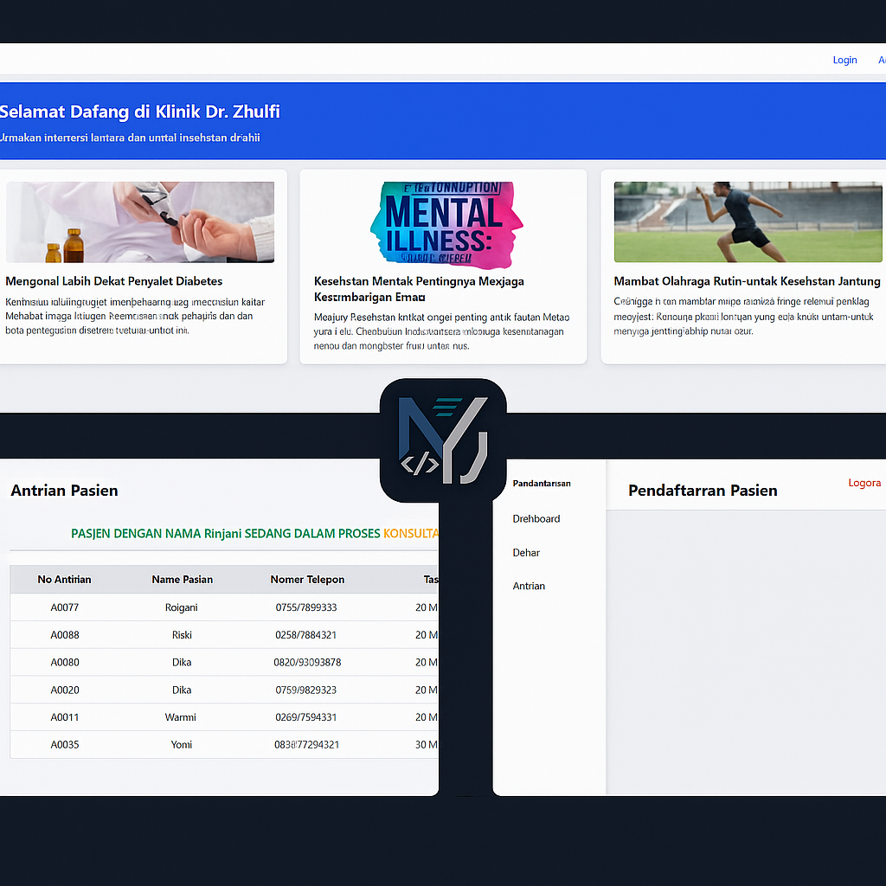
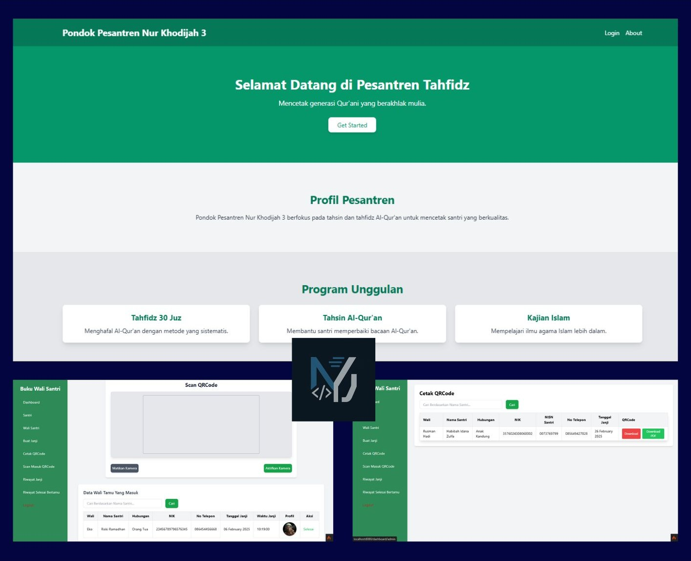
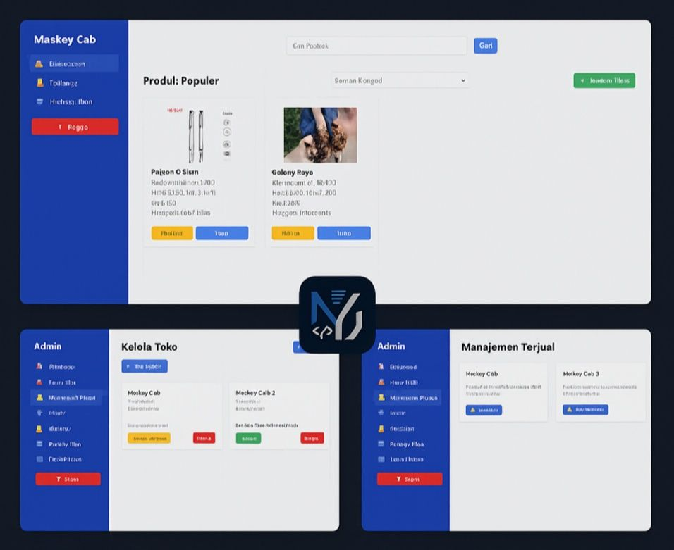

Saya adalah mahasiswa di bidang Sistem Teknologi Informasi yang memiliki semangat tinggi untuk mengembangkan solusi teknologi yang efisien dan inovatif. Dengan pengalaman pengelolaan dan pengembangan sistem informasi, pemrograman, serta analisis data, saya berkomitmen untuk terus belajar dan berkembang dalam dunia teknologi yang dinamis ini.
Curriculum Vitae
Sekilas tentang latar belakang dan pengalaman saya
👤 Data Pribadi
Nama: Misbaqul Diky Kurniawan
Email: dikykurnia089@gmail.com
Alamat: Kec. Ngusikan, Kab. Jombang
No. HP: +62 858 0725 3990
Profesi: Web Development
Profil: Mahasiswa dengan semangat tinggi dalam mengembangkan solusi teknologi yang efisien dan inovatif.
📜 Riwayat Hidup
2019 - Sekarang: Mahasiswa STI - UNWAHA
2021 - Sekarang: Pengembang aplikasi klinik & janji temu
Keahlian:HTMLCSSJavaScriptPHPMySQLCodeIgniterGit
Projek Saya
Beberapa hasil karya dalam pengembangan aplikasi dan website.

Aplikasi Manajemen Klinik
Sistem untuk mengelola data pasien, antrian, dan pembayaran klinik.
PHPMySQLCI

Janji Temu QR-Code
Validasi otomatis janji temu berbasis QR-CODE.
JavaScriptQR APITailwind

Toko Online Griyo Pos
Toko online dengan fitur katalog, keranjang, dan transaksi otomatis.
LaravelMidtransResponsive
Informasi Tambahan
Berikut beberapa informasi tambahan tentang saya yang mencerminkan karakter dan tujuan saya.
👨🎓 Karakter Pribadi
Saya adalah individu yang menjunjung tinggi kedisiplinan dan tanggung jawab dalam setiap pekerjaan yang saya jalani, baik dalam tim maupun secara individu.
Mudah beradaptasi dengan lingkungan baru serta cepat dalam memahami sistem kerja atau teknologi yang belum familiar.
Mampu mengelola waktu dengan efektif dan bekerja di bawah tekanan tanpa mengurangi kualitas hasil kerja.
Memiliki integritas tinggi dan selalu berusaha menyelesaikan tugas dengan penuh dedikasi dan konsistensi.
🧠 Soft Skills
Memiliki kemampuan komunikasi yang efektif, baik secara lisan maupun tulisan, serta mampu menyampaikan ide dengan jelas.
Terbiasa bekerja dalam tim dan mampu berkolaborasi secara aktif untuk mencapai tujuan bersama.
Kreatif dan analitis dalam menghadapi permasalahan, khususnya dalam menyusun solusi teknis dan logis.
Kemampuan manajemen waktu yang baik, sehingga pekerjaan dapat diselesaikan secara efisien dan tepat waktu.
💡 Minat & Fokus
Sangat tertarik dalam pengembangan aplikasi berbasis web dan mobile yang bermanfaat untuk masyarakat luas.
Fokus dalam bidang UI/UX untuk menciptakan pengalaman pengguna yang intuitif dan menarik.
Memiliki ketertarikan dalam bidang keamanan siber, terutama dalam penerapan praktik coding yang aman dan efisien.
Berkomitmen untuk terus mengembangkan diri dalam pemrograman backend dan frontend, serta pengelolaan database.
🎯 Tujuan Karier
Menjadi seorang Web Developer profesional yang mampu membangun sistem yang efisien, user-friendly, dan memiliki nilai guna tinggi.
Terus belajar dan beradaptasi dengan perkembangan teknologi informasi yang dinamis dan cepat berubah.
Berpartisipasi aktif dalam proyek-proyek digital yang berdampak positif untuk masyarakat dan dunia industri.
Mengembangkan startup atau platform digital yang bisa menjadi solusi terhadap masalah yang ada di masyarakat.
📚 Hobi & Aktivitas
Menulis artikel seputar teknologi, coding, dan pengembangan web di blog pribadi sebagai sarana berbagi dan dokumentasi pengetahuan.
Aktif dalam mengikuti event coding seperti hackathon, webinar teknologi, dan pelatihan daring untuk menambah wawasan dan koneksi.
Mengikuti komunitas teknologi di media sosial maupun platform belajar seperti GitHub, Stack Overflow, dan forum diskusi lainnya.
Menjelajahi teknologi baru secara otodidak, terutama framework modern dan tools pendukung pengembangan aplikasi.
⚙️ Tools & Teknologi
Visual Studio Code sebagai editor utama dalam proses pengembangan web dan aplikasi.
Git & GitHub untuk version control dan kolaborasi proyek secara tim maupun individu.
Figma untuk membuat desain antarmuka yang menarik dan responsif sesuai prinsip UI/UX.
Postman untuk pengujian API dan memastikan integrasi antara frontend dan backend berjalan lancar.
Terbiasa menggunakan framework seperti Bootstrap, Tailwind CSS, CodeIgniter, dan Laravel dalam proyek pengembangan.
Tentang Saya
Halo! Saya adalah seorang pengembang web yang memiliki semangat tinggi dalam menciptakan solusi digital yang bermanfaat.
Saya memiliki keahlian dalam pengembangan web menggunakan teknologi seperti HTML, CSS, JavaScript, PHP, dan framework seperti CodeIgniter.
Selain itu, saya aktif mengembangkan sistem manajemen klinik berbasis website sebagai bagian dari kontribusi saya terhadap dunia kesehatan digital.